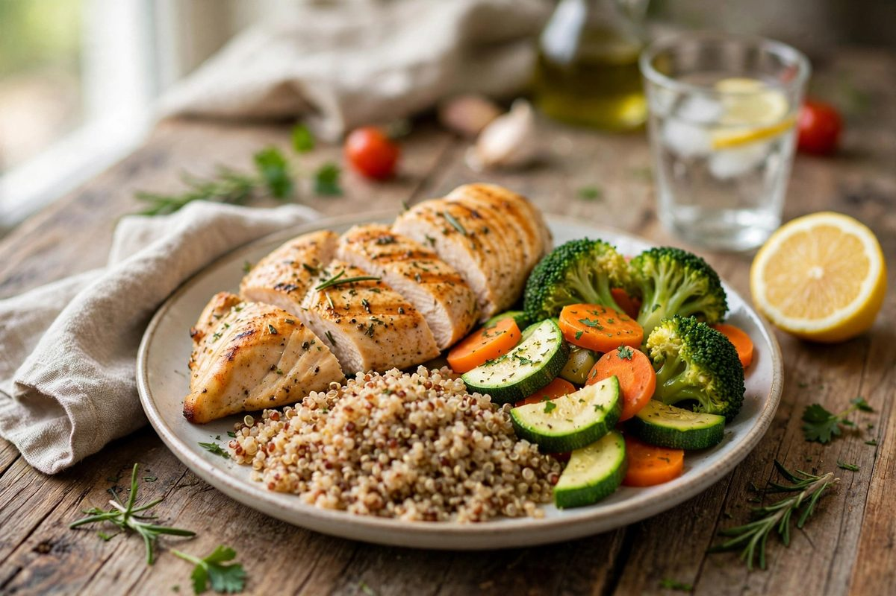
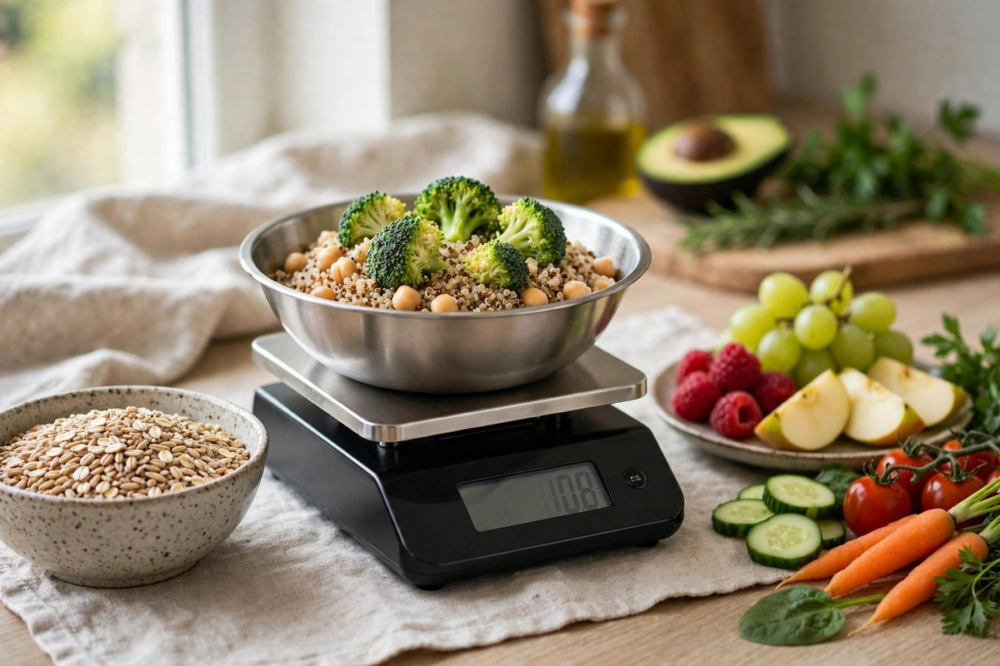
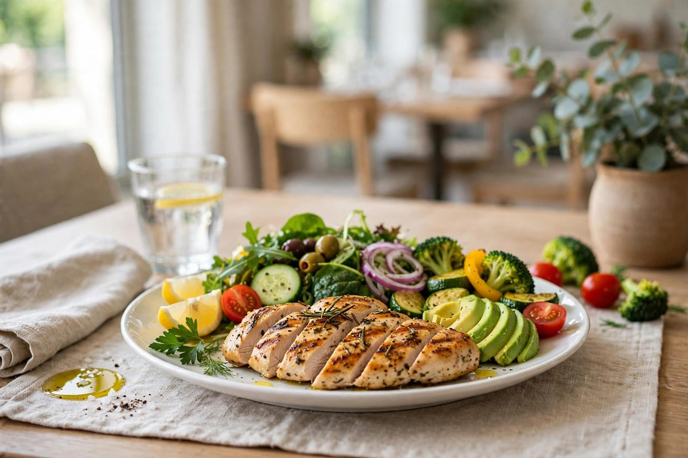
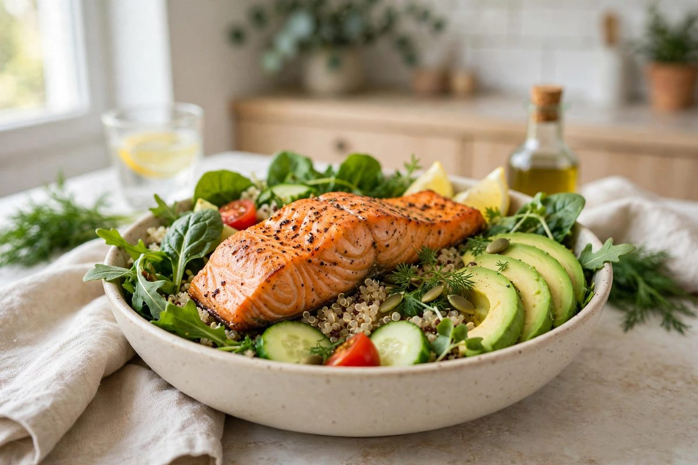
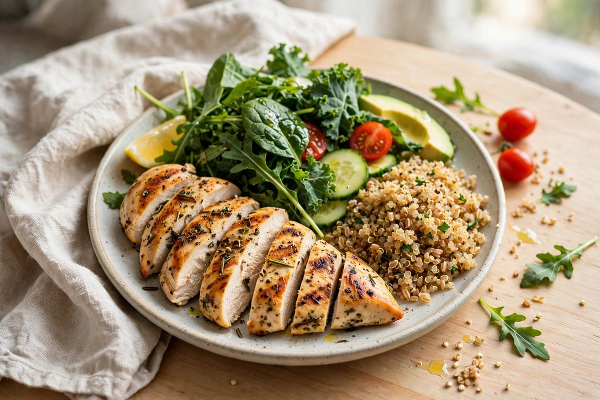
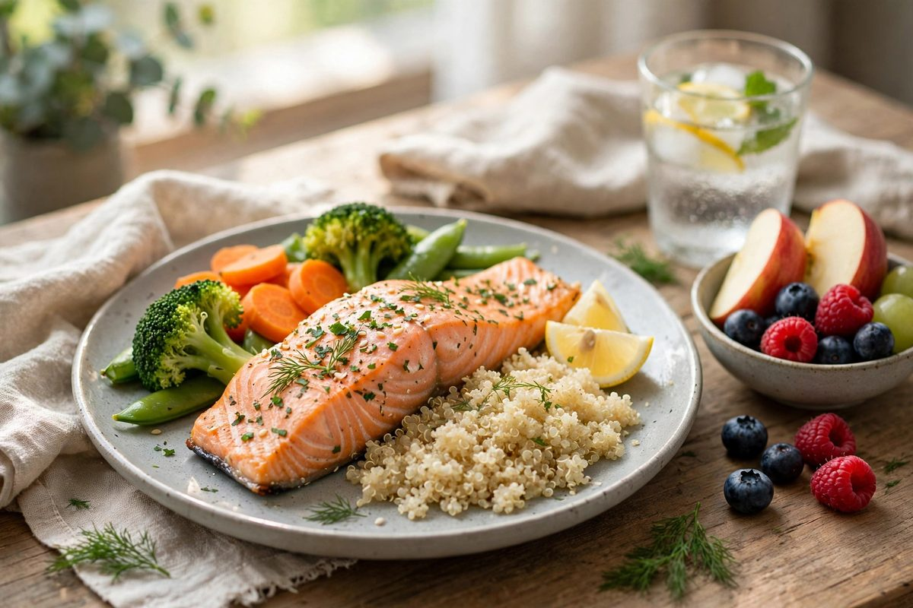
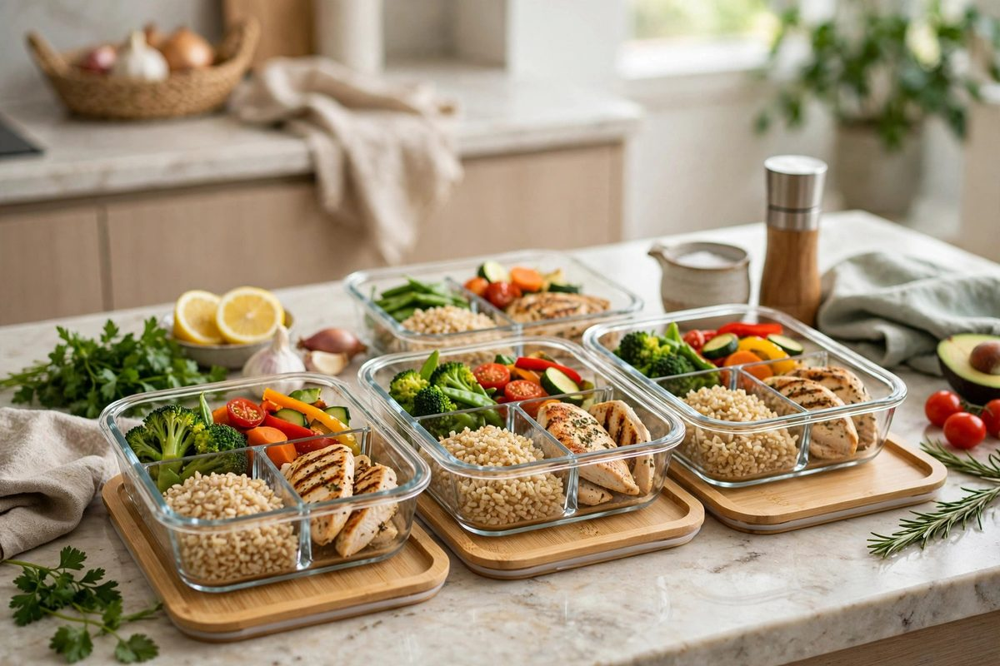
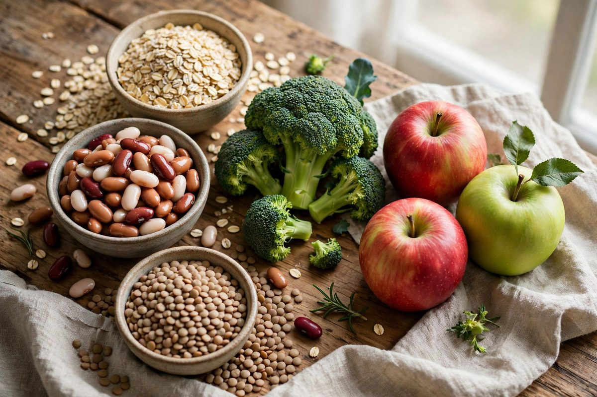
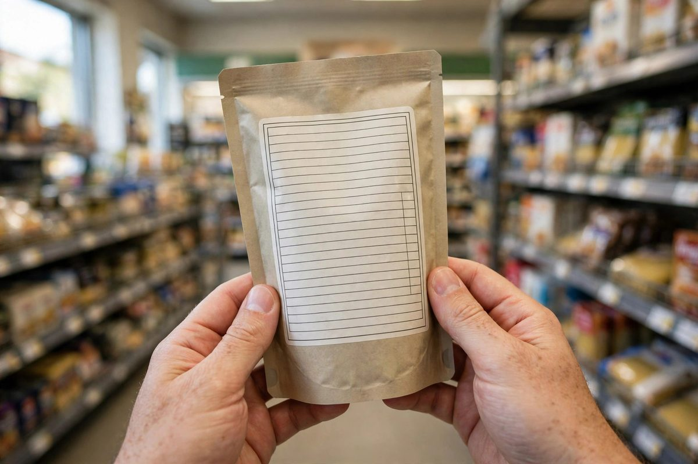

Eating well with diabetes
Calm, practical guidance on carbs, glycemic index, meals, and eating out — written for everyday life, not for textbooks.
Important: This site is educational only and is not medical advice. The tools below give general information. Always consult your doctor or diabetes care team before changing your diet, medication, or monitoring routine.
Tools
1. Carb Counter
Pick a food and the number of servings to see the total carbohydrate grams. Values are typical averages for the serving shown and can vary by brand and preparation.
Total carbs will appear here.
2. Glycemic Index Guide
Search a food to see its approximate glycemic index (GI). Low is under 55, medium is 56 to 69, and high is 70 or above. GI values vary with variety, ripeness, and cooking.
- Rolled oats — GI 55 (low)
- White bread — GI 73 (high)
- Brown rice — GI 68 (medium)
- White rice, jasmine — GI 73 (high)
- Wholemeal bread — GI 50 (low)
- Apple — GI 39 (low)
- Banana — GI 51 (low)
- Milk, whole — GI 15 (low)
- Sweet potato — GI 52 (low)
- Baked potato — GI 78 (high)
- Pasta, spaghetti — GI 44 (low)
- Lentils — GI 25 (low)
- Chickpeas — GI 31 (low)
- Cornflakes — GI 70 (high)
3. Blood Sugar Log
Record your readings on this page. The table is for your own notes only — entries are not saved anywhere and disappear when you leave or refresh the page.
| Date / time | Reading (mmol/L) | Note |
|---|---|---|
| No readings yet. | ||
This log is not medical advice. If a reading is very high or very low, or you feel unwell, follow your care team's guidance and seek medical help promptly.
4. Meal Planner
Build one day of meals from the options below. Carb counts are typical values for the serving shown.
Your day plan will appear here.
5. BMI Calculator
Body mass index is weight in kilograms divided by height in metres squared.
Your BMI will appear here.
Guides

Diabetic Diet Basics — Eating Well with Diabetes
The foundations of eating with diabetes: balanced plates, steady carbs, and habits that help keep blood sugar stable.
Low-GI Foods — A Practical Guide to the Glycemic Index
What glycemic index means, which foods are low GI, and how to use GI without overcomplicating your meals.

Carb Counting — A Step-by-Step Guide for Diabetes
How to count carbohydrates accurately: labels, portions, common foods, and the mistakes that cause most errors.
Diabetic Breakfast Ideas — Steady Starts to the Day
Breakfasts that keep blood sugar steadier: high-fibre, protein-rich options and the ones to watch.

Eating Out with Diabetes — Enjoying Restaurants Without the Spike
How to choose restaurants, read menus, manage portions, and enjoy eating out with diabetes.
Sugar Substitutes — Sweeteners and Diabetes
A clear look at sugar substitutes for diabetes: which sweeteners are safe, how they affect blood sugar, and how to use them.

Diabetic Lunch Ideas — Midday Meals That Keep Blood Sugar Steady
Practical diabetic lunch ideas for home, work, and school: balanced plates, easy prep, and portions that work.
Diabetic Dinner Recipes — Evening Meals for Steady Blood Sugar
Diabetic-friendly dinner ideas: balanced plates, simple cooking methods, and recipes the whole family can enjoy.

Diabetic Snacks — Smart Snacking Between Meals
Snacks that help blood sugar stay steady: protein and fibre choices, portions, and what to avoid.

Type 2 Diabetes Diet — A Complete Guide
How eating changes with type 2 diabetes: weight, blood sugar, heart health, and a practical eating pattern.

Gestational Diabetes Diet — Eating Well in Pregnancy
How to eat with gestational diabetes: balanced meals, blood sugar targets, and keeping you and your baby healthy.

Diabetic Meal Planning — Plan a Week of Balanced Meals
How to plan a week of diabetic-friendly meals: a simple method, a sample week, and shopping tips.

Fiber and Blood Sugar — Why Fibre Is Your Friend
How fibre slows blood sugar rises, which foods are rich in fibre, and how to add more without discomfort.

Exercise and Blood Sugar — Moving Safely with Diabetes
How exercise affects blood sugar, the best activities, and how to exercise safely with diabetes.

Diabetic Desserts — Sweet Treats That Work with Diabetes
Desserts for diabetes: fruit-based puddings, sugar-free options, baking swaps, and portion control.

Reading Food Labels — A Guide for Diabetes
How to read nutrition labels for diabetes: carbohydrate, sugars, fibre, fat, salt, and the claims that mislead.
Diabetes and Heart Health — Protecting Your Heart
Why diabetes raises heart risk, and how food, activity, and habits protect your heart.
Diabetic Diet Myths — What Is True and What Is Not
Common myths about eating with diabetes debunked: sugar, fruit, carbs, and special diabetic foods.

Low-Carb for Diabetes — A Balanced Look
What low-carb eating means for diabetes, who it helps, the risks, and how to do it safely.

Diabetes and Alcohol — What You Need to Know
How alcohol affects blood sugar, the risks for people with diabetes, and how to drink more safely if you choose to.